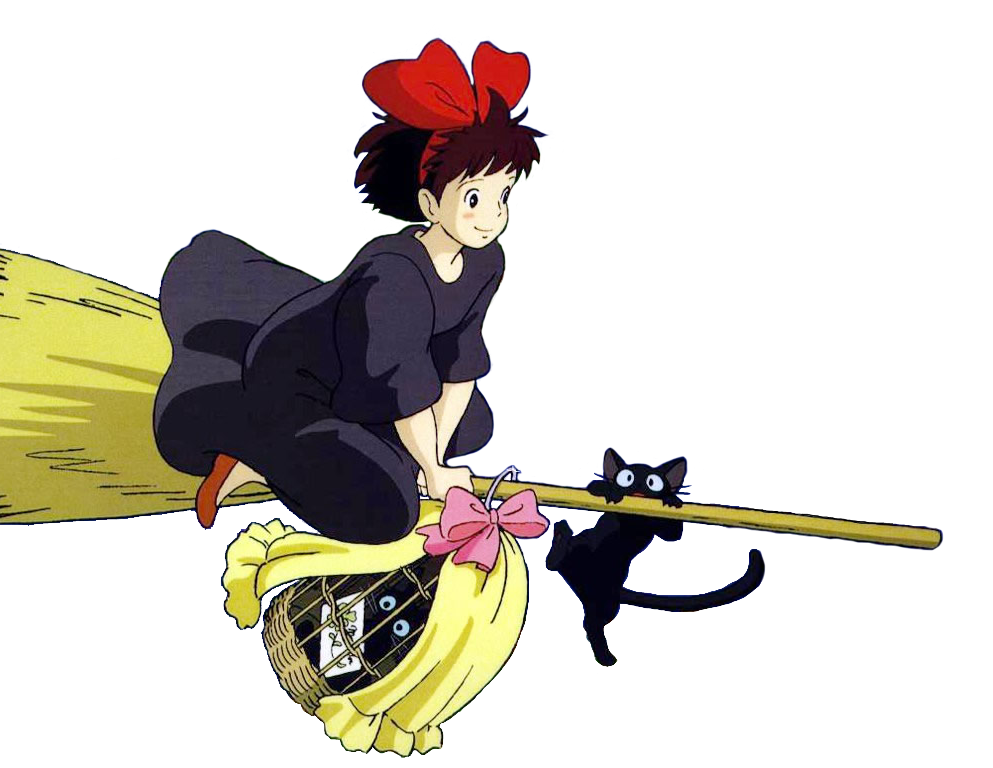
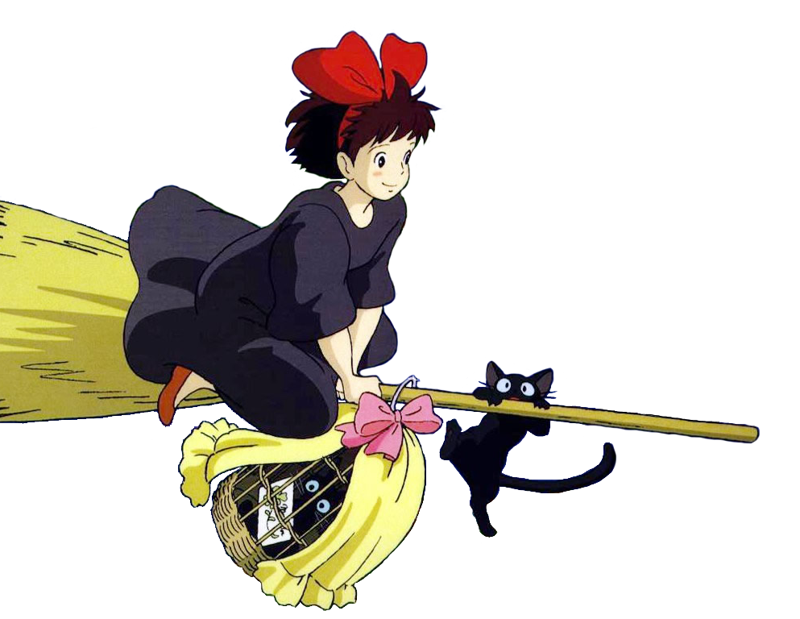
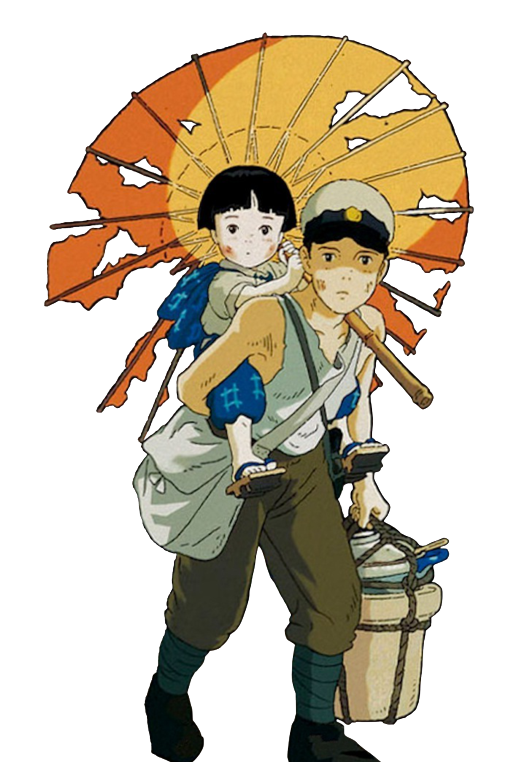
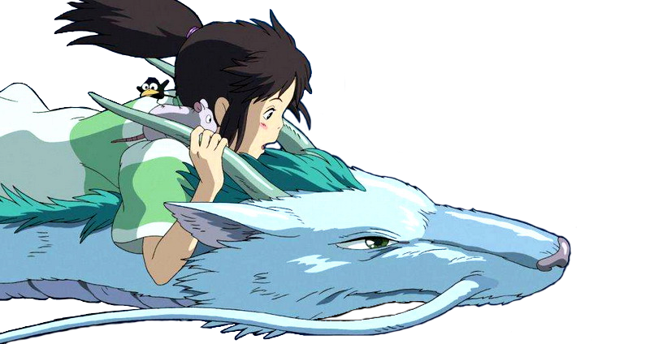
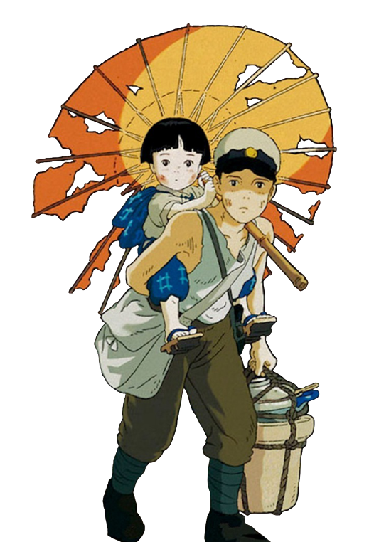
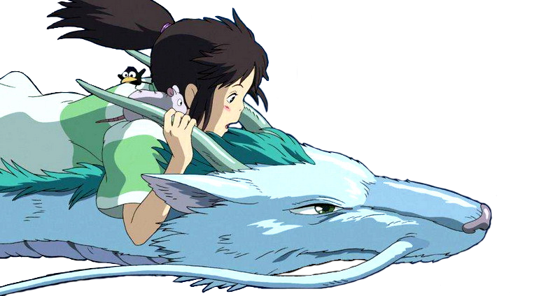
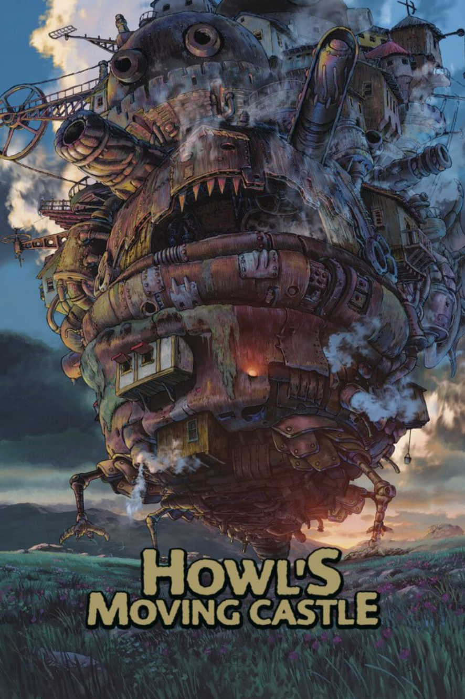

 






Director: Hayao Miyazaki
Released: 2004
Starring: Chieko Baisho, Takuya Kimura, Akihiro Miwa
Howl’s Moving Castle is set in a fictional kingdom where both magic and early 20th century technology are prevalent, against the backdrop of a war with another kingdom. The film tells the story of a young hatter named Sophie after she is turned into an old woman by a witch’s curse. She encounters a wizard named Howl, and gets caught up in his resistance to fighting for the king. Influenced by Miyazaki’s opposition to the United States’ invasion of Iraq in 2003, the film contains strongly anti-war themes.